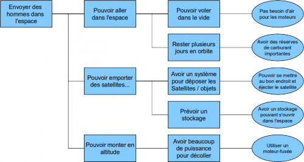
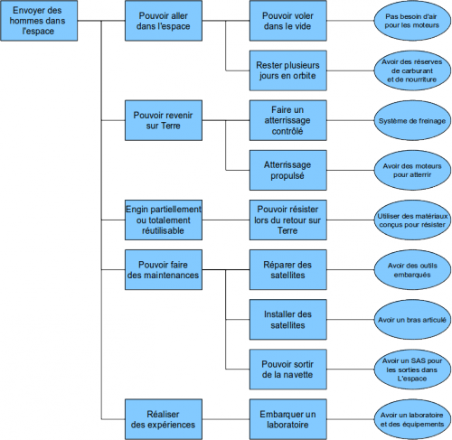
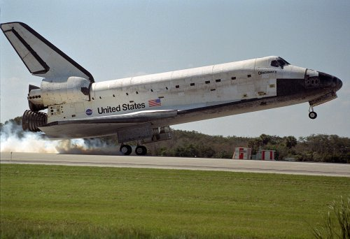
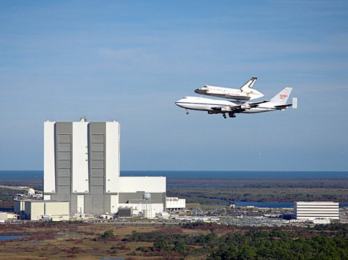

La fusée
Une fusée est un véhicule ayant un moteur à réaction pouvant aller dans l’espace (qui fonctionne sans dioxygène). Elle a une forme aérodynamique et contient une grosse réserve de carburant pour le décollage. Dans le haut de la fusée, on retrouve le plus souvent des satellites. Ces satellites sont protégés de la pluie, de l’humidité et de tout ce qui peut les abîmer par une coiffe qui assure aussi l’aérodynamisme nécessaire au décollage [1].
La navette spatiale
La navette spatiale est aujourd’hui encore perçue comme une grande avancée dans les techniques d’accès à l’espace.
Le projet d’une navette spatiale apparut lorsque l’on commença enfin à réfléchir sur un moyen de réduire le coût d’envoi des satellites dans l’espace, avec des vaisseaux qui n’étaient que très partiellement réutilisables. On voulait aussi envoyer des hommes en orbite-basse à moindre coût. Le projet d’une navette spatiale commença donc dès 1957, avec le X-20 Dyna-Soar. Le projet fut au final abandonné, mais il a posé les bases de la première navette spatiale en service, qui apparaîtra en 1976 : Enterprise.
Analyse fonctionnelle de la fusée
Voici ci-dessous l’outil FAST FAST Function Analysis System Technique est un diagramme qui présente les fonctions de service d’un système. que nous avons fait en analysant une fusée lors de nos recherches :
- 
- FAST de la fusée spatiale
- Fait avec
Libreoffice Impress
(cliquer dessus pour agrandir)
{kind=link}
Analyse fonctionnelle de la navette
À partir des informations recueillies lors de nos recherches, nous avons fait un FAST de la navette spatiale :
- 
- FAST de la navette Spatiale
- Fait avec
Libreoffice Impress
(cliquez dessus pour agrandir)
{kind=link}
Les fusées Ariane
Le programme Ariane a été un programme financé principalement par la France dans le cadre du CNES et d’Arianespace. À l’origine il devait permettre à la France et à l’Europe une alternative viable aux lanceurs américains et russes pour ainsi ne plus être dépendant de ces deux grandes puissances pour leurs satellites.
| Nom | Hauteur | Masse au décollage | Capacité Max en GTO | Nombre de vols | Nombre d’échecs | Premier vol | Dernier vol |
|---|---|---|---|---|---|---|---|
| Ariane I | 47 m | 210 t | 1.75 t | 11 | 2 | 24/12/1979 | 22/02/1986 |
| Ariane II | 49 m | 220 t | 2.20 t | 6 | 1 | 31/05/1986 | 02/04/1989 |
| Ariane III | 49 m | 240 t | 2.60 t | 11 | 1 | 04/08/1984 | 12/07/1989 |
| Ariane IV | 59 m | 2 à 480 t | 2 à 4.8 t | 116 | 3 | 15/06/1988 | 15/02/2003 |
| Ariane V | 47 à 53 m | 750 à 780 t | 6.9 à 10 t | > 60 | 3 | 04/06/1996 | - |
| Nom | Hauteur | Masse au décollage | Capacité Max en GTO | Nombre de vols | Nombre d’échecs | Premier vol | Dernier vol |
|---|---|---|---|---|---|---|---|
| Saturn V | 111 m | 2 970 t | 47 t | 13 | 1 | 09/11/1967 | 14/05/1973 |
Historique de la navette spatiale
Enterprise fut la première « Navette Spatiale » à voler, mais elle ne fut jamais mise en orbite. Elle n’a servi qu’à des vols servant à tester le décollage vertical ou le décollage à partir d’un avion ainsi que l’atterrissage sur piste. Il est apparu que le décollage à la verticale à l’aide d’un moteur-fusée était plus adapté, et moins dangereux. Cette méthode de décollage fut donc adoptée : un moteur fusée principal et deux moteurs fusées secondaires fixés sur la navette permettent à cette dernière de sortir de l’atmosphère.
- 
- Atterrissage de Discovery
- ©NASA (domaine public)
Cinq navettes ont alors suivi dans le programme spatial américain. Seul ce programme a d’ailleurs présenté des résultats aboutis au sujet des navettes spatiales puisque les programmes russes et japonais à ce sujet ont été abandonnés sans vol dans l’espace.
Deux accidents ont été recensés dans lesquels la navette s’est désintégrée, provoquant chacun 7 morts. Ils se sont produits en 1986 puis en 2003 avec les programmes Challenger [3] et Columbia. Cela représente donc plus de la moitié des morts dans l’espace depuis le début de la conquête spatiale, qui est aujourd’hui porté à 22. Le programme des navettes spatiales américain s’est interrompu en 2011, avec Atlantis, l’avant dernière navette américaine créée. Cette dernière mission avait pour but de finaliser la station spatiale internationale [4].
Bilan
Au bout du compte, la navette spatiale est un projet qui aura permis 135 vols dans l’espace.
Elle reste le meilleur moyen d’envoyer un maximum de personnes dans l’espace. Elle
possède également les caractéristiques pour permettre des expériences
courtes réalisées par des humains et permet aussi d’effectuer des réparations
sur des satellites en orbite. Elle est enfin réutilisable, ce qui constitue aujourd’hui
son plus grand avantage par rapport aux lanceurs classiques de fusées. Mais, le dernier décollage
de la navette spatiale Atlantis a mis fin au programme des navettes spatiales
américaines [5].
Cependant les lanceurs-fusées sont et
resteront probablement le moyen le plus simple et le plus rentable pour envoyer des satellites
ou des sondes en orbite ou à travers le système solaire.
- 
- Columbia sur le Boeing 747 spécial
- Vu en fond du
Kennedy Space Center,
vol du 9 janvier 1990.
©NASA (domaine public)